Modulo 3 · Esercizio 7: Impostazioni del sito
Passo 1 · Accesso al sito con User02
- 1. Accedere alla VM
SEA-DEV2con le credenziali di User02. -
2. Aprire Microsoft Edge e accedere all'indirizzo del sito:
-
3. Inserire le credenziali di User02 solo se richiesto (l'accesso dovrebbe avvenire in automatico via SSO).
Passo 2 · Site Information
- 1. Selezionare la rotella delle impostazioni (in alto a destra) e scegliere Site information.
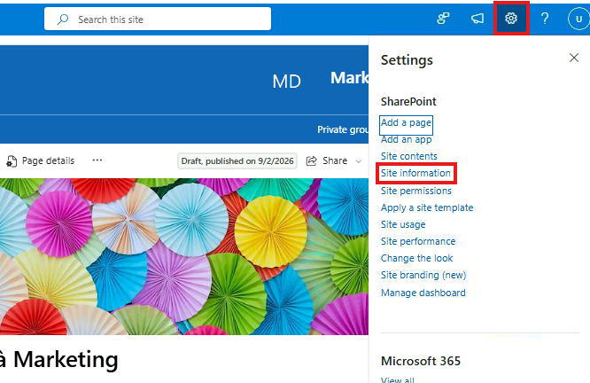
- 2. Visualizzare senza modificare le opzioni disponibili in questo pannello:
- Site name e Site description: possono essere modificati direttamente da qui.
- Site logo: possibilità di cambiarlo rapidamente.
- Privacy Settings: possibilità di passare il sito da Private a Public (o viceversa) — visibile in fondo al pannello.
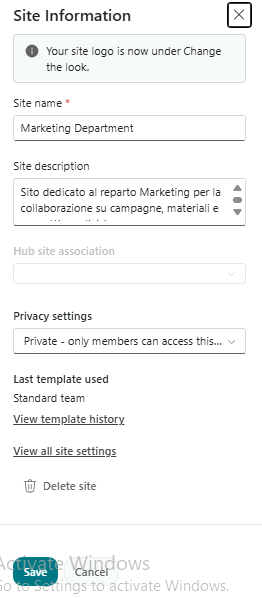
Passo 3 · Add an App
- 1. Dalla rotella delle impostazioni, selezionare Add an app.
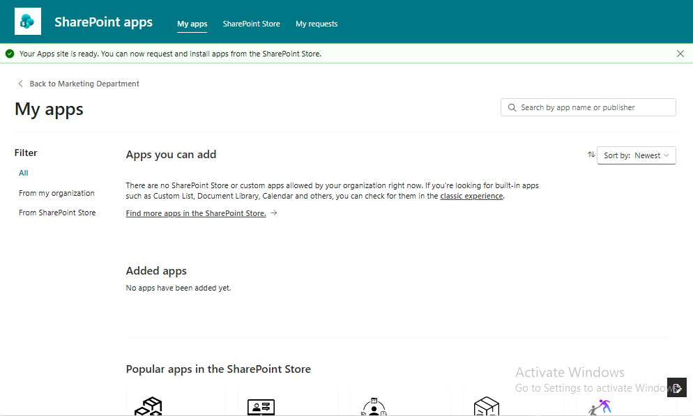
-
2. Visualizzare lo store premendo su Find more apps in the SharePoint Store.
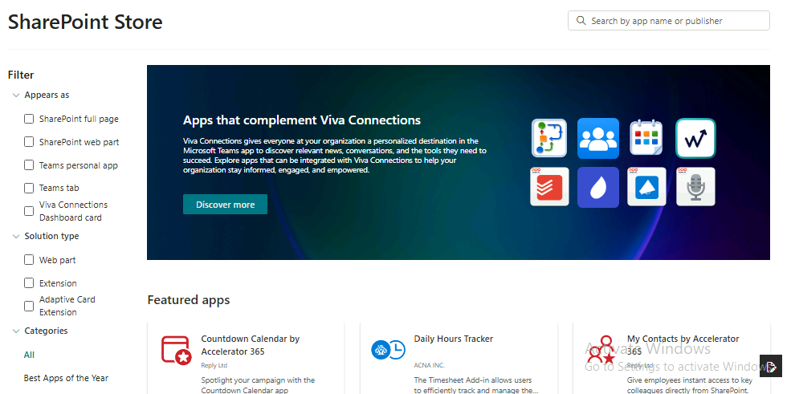
-
3. Cercare Approval System, premere Request, aggiungere un commento a piacere e inviare la richiesta.
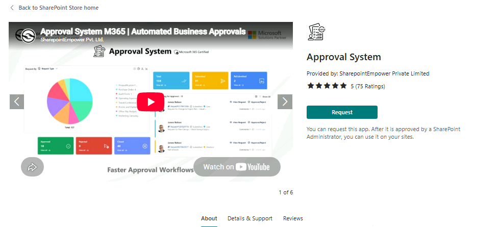
Attenzione
E' possibile che l'invio della richiesta per l'app dallo store non parta e dia questo errore:
Can't send request. Refresh your page and try again. If the issue persists, contact a SharePoint Administrator
Nel caso refreshare la pagina e aspettare un minuto.
- 4. Tornare su
SEA-DEV1su SharePoint admin center > More features > Apps e visualizzare i menù di controllo sulle apps per sharepoint.
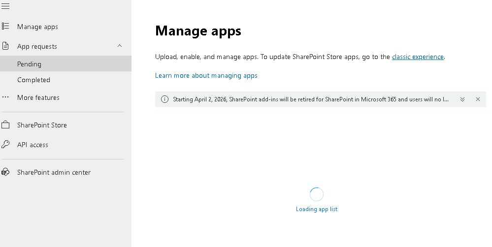
Nota
Le richieste di app dallo Store arrivano agli amministratori in SharePoint admin center > More features > Apps > App requests. Gli amministratori possono anche impedire agli utenti di accedere allo Store.
Passo 4 · Site Usage
- 1. Tornare su
SEA-DEV2con User02 e aprire Marketing Department. - 2. Dalla rotella delle impostazioni, selezionare Site usage.
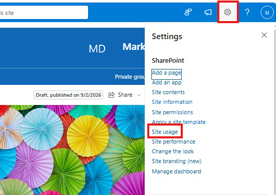
- 3. Visualizzare le statistiche disponibili: numero di visite, file più visualizzati/modificati di recente, utenti più attivi.
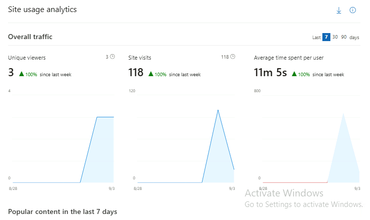
Passo 5 · View all site settings (solo visualizzazione)
- 1. Dalla rotella delle impostazioni, selezionare Site information, poi in fondo al pannello selezionare View all site settings.
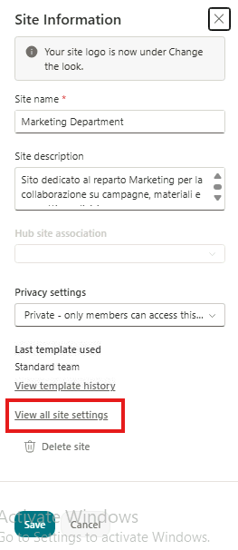
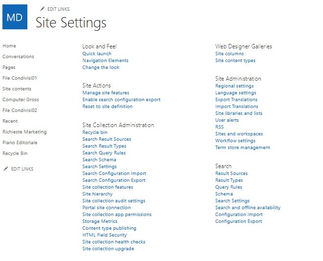
-
2. Aprire (solo per visualizzare, senza modificare) le seguenti sezioni, evidenziandone lo scopo:
-
Regional Settings: permette di cambiare il formato di data e ora, il fuso orario predefinito e il calendario utilizzato dal sito. Cambiare Locale e mettere Italian e mettere ok.
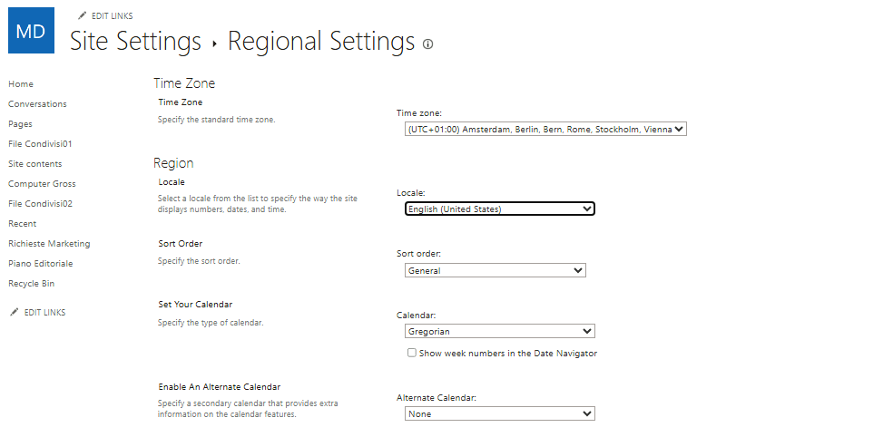
- Site language settings (Language settings): permette di aggiungere lingue aggiuntive all'interfaccia del sito, così che ogni utente possa visualizzare menu ed etichette nella propria lingua preferita. Aggiungere Italian, French e Spanish e premere save.
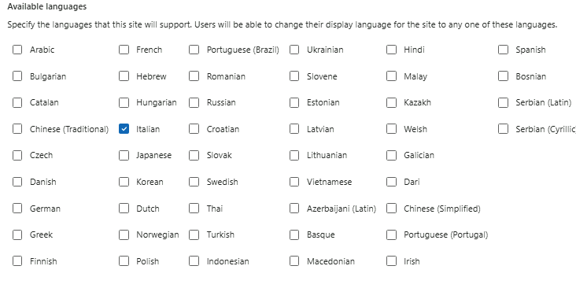
- Term store management (se disponibile a livello di sito/hub): permette di gestire i termini di metadati gestiti (managed metadata) usati nelle colonne di tipo Managed Metadata, utile da mostrare come collegamento fra i metadati visti nell'Esercizio 3 e una gestione centralizzata dei termini.
Suggerimento
Il Term store a livello di tenant si gestisce da SharePoint admin center > Content services > Term store.